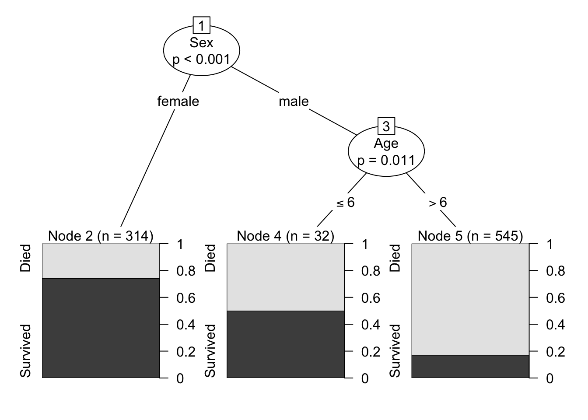
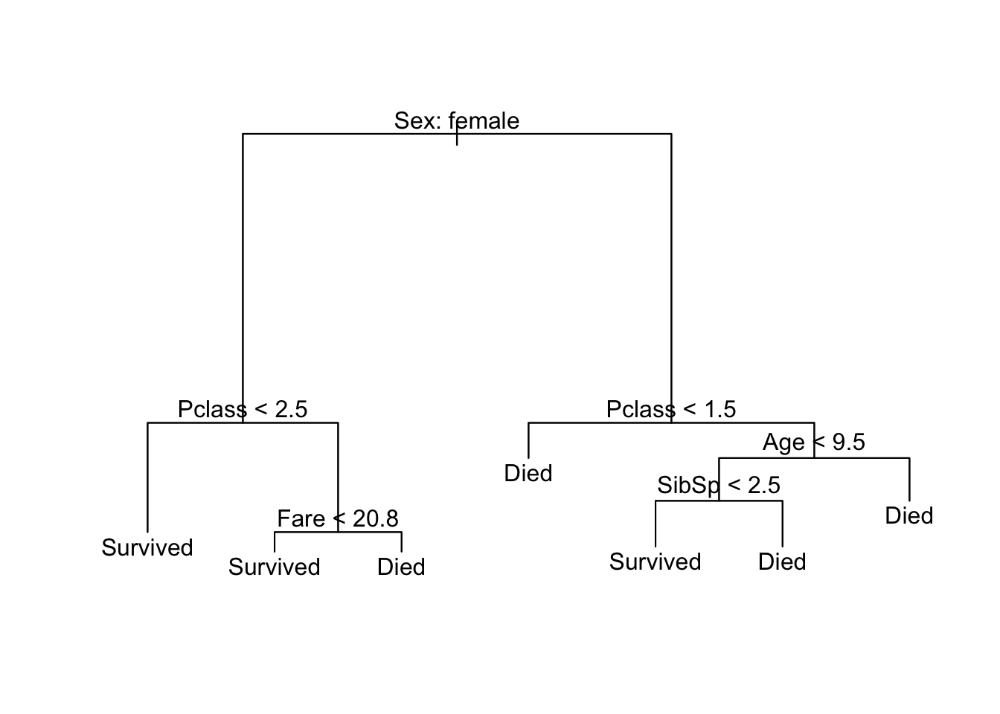
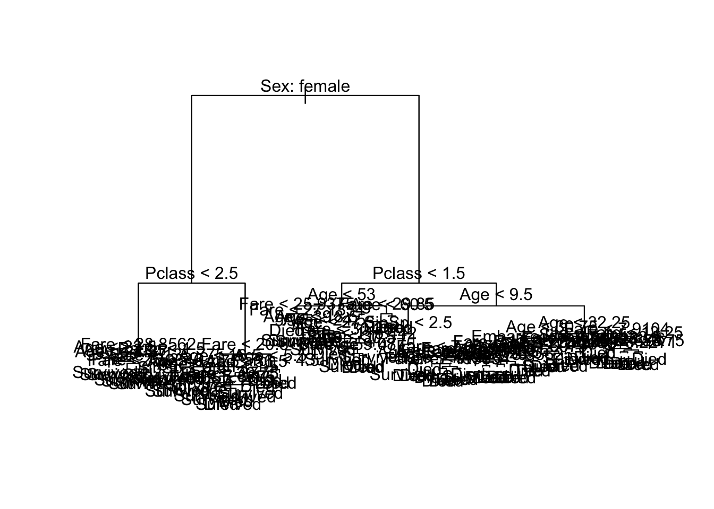
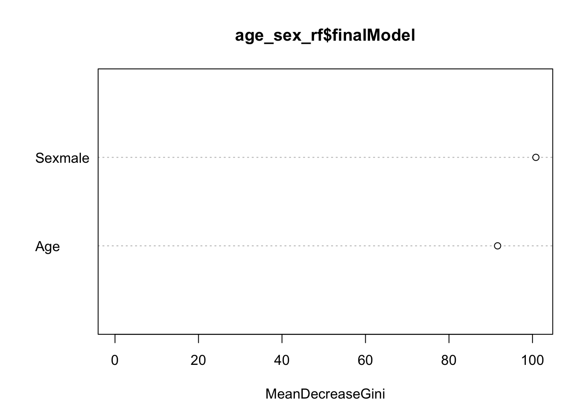
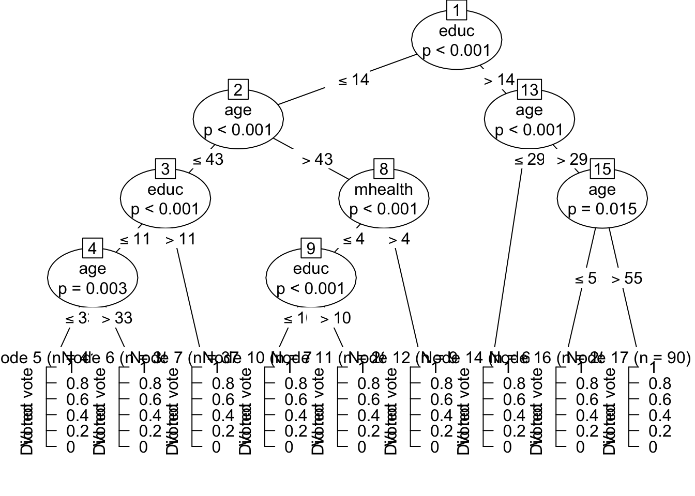
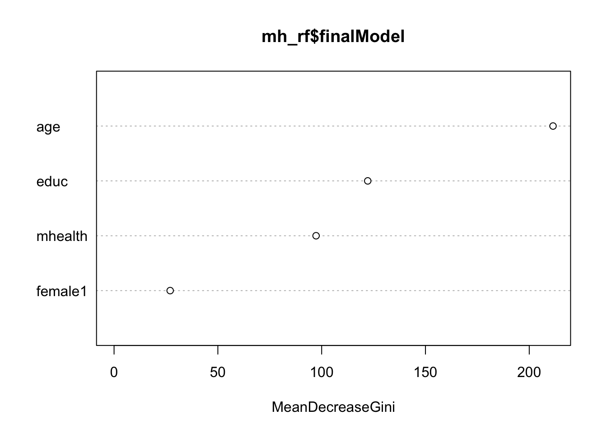

Statistical learning: decision trees and random forests
library(tidyverse)
library(modelr)
library(broom)
set.seed(1234)
theme_set(theme_minimal())Decision trees

Does it move?

Are you old? A helpful decision tree

Decision trees are intuitive concepts for making decisions. They are also useful methods for regression and classification. They work by splitting the observations into a number of regions, and predictions are made based on the mean or mode of the training observations in that region.
Interpreting a decision tree
Let’s start with the Titanic data.
library(titanic)
titanic <- titanic_train %>%
as_tibble()
titanic %>%
head() %>%
knitr::kable()| PassengerId | Survived | Pclass | Name | Sex | Age | SibSp | Parch | Ticket | Fare | Cabin | Embarked |
|---|---|---|---|---|---|---|---|---|---|---|---|
| 1 | 0 | 3 | Braund, Mr. Owen Harris | male | 22 | 1 | 0 | A/5 21171 | 7.2500 | S | |
| 2 | 1 | 1 | Cumings, Mrs. John Bradley (Florence Briggs Thayer) | female | 38 | 1 | 0 | PC 17599 | 71.2833 | C85 | C |
| 3 | 1 | 3 | Heikkinen, Miss. Laina | female | 26 | 0 | 0 | STON/O2. 3101282 | 7.9250 | S | |
| 4 | 1 | 1 | Futrelle, Mrs. Jacques Heath (Lily May Peel) | female | 35 | 1 | 0 | 113803 | 53.1000 | C123 | S |
| 5 | 0 | 3 | Allen, Mr. William Henry | male | 35 | 0 | 0 | 373450 | 8.0500 | S | |
| 6 | 0 | 3 | Moran, Mr. James | male | NA | 0 | 0 | 330877 | 8.4583 | Q |
I want to predict who lives and who dies during this event. Instead of using logistic regression, I’m going to calculate a decision tree based on a passenger’s age and gender. Here’s what that decision tree looks like:

Some key terminology:
- Each outcome (survived or died) is a terminal node or a leaf
- Splits occur at internal nodes
- The segments connecting each node are called branches
To make a prediction for a specific passenger, we start the decision tree from the top node and follow the appropriate branches down until we reach a terminal node. At each internal node, if our observation matches the condition, then travel down the left branch. If our observation does not match the condition, then travel down the right branch.
So for a 50 year old female passenger:
- Start at the first internal node. The passenger in question is a female, so take the branch to the left.
- We reach a terminal node (“Survived”). We would predict the passenger in question survived the sinking of the Titanic.
For a 20 year old male passenger:
- Start at the first internal node - the passenger in question is a male, so take the branch to the right.
- The passenger in question is not less than 13 years old (R would say the condition is
FALSE), so take the branch to the right. - We reach a terminal node (“Died”). We would predict the passenger in question died in the sinking of the Titanic.
Estimating a decision tree
First we need to load the tree library and prepare the data. tree is somewhat finicky about how data must be formatted in order to estimate the tree. For the Titanic data, we need to convert all qualitiative variables to factors using the as.factor() function. To make interpretation easier, I also recoded Survived from its 0/1 coding to explicitly identify which passengers survived and which died.
library(tree)
titanic_tree_data <- titanic %>%
mutate(Survived = if_else(Survived == 1, "Survived", "Died"),
Survived = as.factor(Survived),
Sex = as.factor(Sex))
titanic_tree_data## # A tibble: 891 x 12
## PassengerId Survived Pclass
## <int> <fctr> <int>
## 1 1 Died 3
## 2 2 Survived 1
## 3 3 Survived 3
## 4 4 Survived 1
## 5 5 Died 3
## 6 6 Died 3
## 7 7 Died 1
## 8 8 Died 3
## 9 9 Survived 3
## 10 10 Survived 2
## # ... with 881 more rows, and 9 more variables: Name <chr>, Sex <fctr>,
## # Age <dbl>, SibSp <int>, Parch <int>, Ticket <chr>, Fare <dbl>,
## # Cabin <chr>, Embarked <chr>Now we can use the tree() function to estimate the model. The format looks exactly like lm() or glm() - first we specify the formula that defines the model, then we specify where the data is stored:
titanic_tree <- tree(Survived ~ Age + Sex, data = titanic_tree_data)
summary(titanic_tree)##
## Classification tree:
## tree(formula = Survived ~ Age + Sex, data = titanic_tree_data)
## Number of terminal nodes: 3
## Residual mean deviance: 1.019 = 724.7 / 711
## Misclassification error rate: 0.2129 = 152 / 714The summary() function provides several important statistics:
- There are three terminal nodes in the tree
- Residual mean deviance is an estimate of model fit. It is usually helpful in comparing the effectiveness of different models.
- This decision tree misclassifies \(21.3\%\) of the training set observations
That’s all well in good, but decision trees are meant to be viewed. Let’s plot it!
plot(titanic_tree)
text(titanic_tree, pretty = 0)
tree() does not use ggplot2 to graph the results; instead it relies on the base graphics package. plot(titanic_tree) draws the branches and text(titanic_tree, pretty = 0) adds the text labeling each node.1
Build a more complex tree
Since we have a lot of other variables in our Titanic data set, let’s estimate a more complex model that accounts for all the information we have.2 We’ll have to format all our columns this time before we can estimate the model. Because there are multiple qualitative variables as predictors, I will use mutate_if() to apply as.factor() to all character columns in one line of code (another type of iterative/conditional operation):
titanic_tree_full_data <- titanic %>%
mutate(Survived = if_else(Survived == 1, "Survived",
if_else(Survived == 0, "Died", NA_character_))) %>%
mutate_if(is.character, as.factor)
titanic_tree_full <- tree(Survived ~ Pclass + Sex + Age + SibSp +
Parch + Fare + Embarked, data = titanic_tree_full_data)
summary(titanic_tree_full)##
## Classification tree:
## tree(formula = Survived ~ Pclass + Sex + Age + SibSp + Parch +
## Fare + Embarked, data = titanic_tree_full_data)
## Variables actually used in tree construction:
## [1] "Sex" "Pclass" "Fare" "Age" "SibSp"
## Number of terminal nodes: 7
## Residual mean deviance: 0.7975 = 563.9 / 707
## Misclassification error rate: 0.1737 = 124 / 714plot(titanic_tree_full)
text(titanic_tree_full, pretty = 0)
Now we’ve built a more complicated decision tree. Fortunately it is still pretty interpretable. Notice that some of the variables we included in the model (Parch and Embarked) ended up being dropped from the final model. This is because to build the tree and ensure it is not overly complicated, the algorithm goes through a process of iteration and pruning to remove twigs or branches that result in a complicated model that does not provide significant improvement in overall model accuracy. You can tweak these parameters to ensure the model keeps all the variables, but could result in a nasty looking picture:
titanic_tree_messy <- tree(Survived ~ Pclass + Sex + Age + SibSp +
Parch + Fare + Embarked,
data = titanic_tree_full_data,
control = tree.control(
nobs = nrow(titanic_tree_full_data),
mindev = 0,
minsize = 10)
)
summary(titanic_tree_messy)##
## Classification tree:
## tree(formula = Survived ~ Pclass + Sex + Age + SibSp + Parch +
## Fare + Embarked, data = titanic_tree_full_data, control = tree.control(nobs = nrow(titanic_tree_full_data),
## mindev = 0, minsize = 10))
## Number of terminal nodes: 76
## Residual mean deviance: 0.5148 = 328.4 / 638
## Misclassification error rate: 0.112 = 80 / 714plot(titanic_tree_messy)
text(titanic_tree_messy, pretty = 0)
The misclassification error rate for this model is much lower than the previous versions, but it is also much less interpretable. Depending on your audience and how you want to present the results of your statistical model, you need to determine the optimal trade-off between accuracy and interpretability.
Benefits/drawbacks to decision trees
Decision trees are an entirely different method of estimating functional forms as compared to linear regression. There are some benefits to trees:
- They are easy to explain. Most people, even if they lack statistical training, can understand decision trees.
- They are easily presented as visualizations, and pretty interpretable.
- Qualitative predictors are easily handled without the need to create a long series of dummy variables.
However there are also drawbacks to trees:
- Their accuracy rates are generally lower than other regression and classification approaches.
- Trees can be non-robust. That is, a small change in the data or inclusion/exclusion of a handful of observations can dramatically alter the final estimated tree.
Fortuntately, there is an easy way to improve on these poor predictions: by aggregating many decision trees and averaging across them, we can substantially improve performance.
Random forests
One method of aggregating trees is the random forest approach. This uses the concept of bootstrapping to build a forest of trees using the same underlying data set. Bootstrapping is a standard resampling process whereby you repeatedly sample with replacement from a data set. So if you have a dataset of 500 observations, you might draw a sample of 500 observations from the data. But by sampling with replacement, some observations may be sampled multiple times and some observations may never be sampled. This essentially treats your data as a population of interest. You repeat this process many times (say \(k = 1000\)), then estimate your quantity or model of interest on each sample. Then finally you average across all the bootstrapped samples to calculate the final model or statistical estimator.
As with other resampling methods, each individual sample will have some degree of bias to it. However by averaging across all the bootstrapped samples you cancel out much of this bias. Most importantly, averaging a set of observations reduces variance - you achieve stable estimates of the prediction accuracy or overall model error.
In the context of decision trees, this means we draw repeated samples from the original dataset and estimate a decision tree model on each sample. To make predictions, we estimate the outcome using each tree and average across all of them to obtain the final prediction. Rather than being a binary outcome (\([0,1]\), survived/died), the average prediction will be a probability of the given outcome (i.e. the probability of survival). This process is called bagging.
Random forests go a step further: when building individual decision trees, each time a split in the tree is considered a random sample of predictors is selected as the candidates for the split. Random forests specifically exclude a portion of the predictor variables when building individual trees. Why throw away good data? This ensures each decision tree is not correlated with one another. If one specific variable was a strong predictor in the data set (say gender in the Titanic data set), it could potentially dominate every decision tree and the result would be nearly-identical trees regardless of the sampling procedure. By forcibly excluding a random subset of variables, individual trees in random forests will not have strong correlations with one another. Therefore the average predictions will be more reliable.
Estimating statistical models using caret
To estimate a random forest, we move outside the world of tree and into a new package in R: caret. caret is a package in R for training and plotting a wide variety of statistical learning models. It is outside of the tidyverse so can be a bit more difficult to master. caret does not contain the estimation algorithms itself; instead it creates a unified interface to approximately 233 different models from various packages in R. To install caret and make sure you install all the related packages it relies on, run the following code:
install.packages("caret", dependencies = TRUE)The basic function to train models is train(). We can train regression and classification models using one of these models. For instance, rather than using glm() to estimate a logistic regression model, we could use caret and the "glm" method. Note that caret is extremely picky about preparing data for analysis. For instance, we have to remove all missing values before training a model.
library(caret)
titanic_clean <- titanic %>%
filter(!is.na(Survived), !is.na(Age))
caret_glm <- train(Survived ~ Age, data = titanic_clean,
method = "glm",
family = binomial,
trControl = trainControl(method = "none"))
summary(caret_glm)##
## Call:
## NULL
##
## Deviance Residuals:
## Min 1Q Median 3Q Max
## -1.1488 -1.0361 -0.9544 1.3159 1.5908
##
## Coefficients:
## Estimate Std. Error z value Pr(>|z|)
## (Intercept) -0.05672 0.17358 -0.327 0.7438
## Age -0.01096 0.00533 -2.057 0.0397 *
## ---
## Signif. codes: 0 '***' 0.001 '**' 0.01 '*' 0.05 '.' 0.1 ' ' 1
##
## (Dispersion parameter for binomial family taken to be 1)
##
## Null deviance: 964.52 on 713 degrees of freedom
## Residual deviance: 960.23 on 712 degrees of freedom
## AIC: 964.23
##
## Number of Fisher Scoring iterations: 4trControl = trainControl(method = "none")- by defaultcaretimplements a bootstrap resampling procedure to validate the results of the model. For our purposes here I want to turn that off by setting the resampling method to"none".
The results are identical to those obtained by the glm() function:3
glm_glm <- glm(Survived ~ Age, data = titanic_clean, family = "binomial")
summary(glm_glm)##
## Call:
## glm(formula = Survived ~ Age, family = "binomial", data = titanic_clean)
##
## Deviance Residuals:
## Min 1Q Median 3Q Max
## -1.1488 -1.0361 -0.9544 1.3159 1.5908
##
## Coefficients:
## Estimate Std. Error z value Pr(>|z|)
## (Intercept) -0.05672 0.17358 -0.327 0.7438
## Age -0.01096 0.00533 -2.057 0.0397 *
## ---
## Signif. codes: 0 '***' 0.001 '**' 0.01 '*' 0.05 '.' 0.1 ' ' 1
##
## (Dispersion parameter for binomial family taken to be 1)
##
## Null deviance: 964.52 on 713 degrees of freedom
## Residual deviance: 960.23 on 712 degrees of freedom
## AIC: 964.23
##
## Number of Fisher Scoring iterations: 4Estimating a random forest
We will reuse titanic_tree_full_data with the adjustment that we need to remove observations with missing values. In the process, let’s pare the data frame down to only columns that will be used the model:
titanic_rf_data <- titanic_tree_full_data %>%
select(Survived, Pclass, Sex, Age, SibSp, Parch, Fare, Embarked) %>%
na.omit()
titanic_rf_data## # A tibble: 714 x 8
## Survived Pclass Sex Age SibSp Parch Fare Embarked
## <fctr> <int> <fctr> <dbl> <int> <int> <dbl> <fctr>
## 1 Died 3 male 22 1 0 7.2500 S
## 2 Survived 1 female 38 1 0 71.2833 C
## 3 Survived 3 female 26 0 0 7.9250 S
## 4 Survived 1 female 35 1 0 53.1000 S
## 5 Died 3 male 35 0 0 8.0500 S
## 6 Died 1 male 54 0 0 51.8625 S
## 7 Died 3 male 2 3 1 21.0750 S
## 8 Survived 3 female 27 0 2 11.1333 S
## 9 Survived 2 female 14 1 0 30.0708 C
## 10 Survived 3 female 4 1 1 16.7000 S
## # ... with 704 more rowsNow that the data is prepped, let’s estimate the model. To start, we’ll estimate a simple model that only uses age and gender. Again we use the train() function but this time we will use the rf method.4 To start with, I will estimate a forest with 200 trees (the default is 500 trees) and set the trainControl method to "oob" (I will explain this shortly):
age_sex_rf <- train(Survived ~ Age + Sex, data = titanic_rf_data,
method = "rf",
ntree = 200,
trControl = trainControl(method = "oob"))## note: only 1 unique complexity parameters in default grid. Truncating the grid to 1 .age_sex_rf## Random Forest
##
## 714 samples
## 2 predictor
## 2 classes: 'Died', 'Survived'
##
## No pre-processing
## Resampling results:
##
## Accuracy Kappa
## 0.7521008 0.479004
##
## Tuning parameter 'mtry' was held constant at a value of 2Hmm. What have we generated here? How can we analyze the results?
Structure of train() object
The object generated by train() is a named list:
str(age_sex_rf, max.level = 1)## List of 24
## $ method : chr "rf"
## $ modelInfo :List of 15
## $ modelType : chr "Classification"
## $ results :'data.frame': 1 obs. of 3 variables:
## $ pred : NULL
## $ bestTune :'data.frame': 1 obs. of 1 variable:
## $ call : language train.formula(form = Survived ~ Age + Sex, data = titanic_rf_data, method = "rf", ntree = 200, trControl = t| __truncated__
## $ dots :List of 1
## $ metric : chr "Accuracy"
## $ control :List of 26
## $ finalModel :List of 23
## ..- attr(*, "class")= chr "randomForest"
## $ preProcess : NULL
## $ trainingData:Classes 'tbl_df', 'tbl' and 'data.frame': 714 obs. of 3 variables:
## $ resample : NULL
## $ resampledCM : NULL
## $ perfNames : chr [1:2] "Accuracy" "Kappa"
## $ maximize : logi TRUE
## $ yLimits : NULL
## $ times :List of 3
## $ levels : atomic [1:2] Died Survived
## ..- attr(*, "ordered")= logi FALSE
## $ terms :Classes 'terms', 'formula' language Survived ~ Age + Sex
## .. ..- attr(*, "variables")= language list(Survived, Age, Sex)
## .. ..- attr(*, "factors")= int [1:3, 1:2] 0 1 0 0 0 1
## .. .. ..- attr(*, "dimnames")=List of 2
## .. ..- attr(*, "term.labels")= chr [1:2] "Age" "Sex"
## .. ..- attr(*, "order")= int [1:2] 1 1
## .. ..- attr(*, "intercept")= int 1
## .. ..- attr(*, "response")= int 1
## .. ..- attr(*, ".Environment")=<environment: R_GlobalEnv>
## .. ..- attr(*, "predvars")= language list(Survived, Age, Sex)
## .. ..- attr(*, "dataClasses")= Named chr [1:3] "factor" "numeric" "factor"
## .. .. ..- attr(*, "names")= chr [1:3] "Survived" "Age" "Sex"
## $ coefnames : chr [1:2] "Age" "Sexmale"
## $ contrasts :List of 1
## $ xlevels :List of 1
## - attr(*, "class")= chr [1:2] "train" "train.formula"The model itself is always stored in the finalModel element. So to use the model in other functions, we would refer to it as age_sex_rf$finalModel.
Model statistics
age_sex_rf$finalModel##
## Call:
## randomForest(x = x, y = y, ntree = 200, mtry = param$mtry)
## Type of random forest: classification
## Number of trees: 200
## No. of variables tried at each split: 2
##
## OOB estimate of error rate: 24.37%
## Confusion matrix:
## Died Survived class.error
## Died 347 77 0.1816038
## Survived 97 193 0.3344828This tells us some important things:
- We used 200 trees
- At every potential branch, the model randomly used one of 2 variables to define the split
The out-of-bag (OOB) error rate
This requires further explanation. Because each tree is built from a bootstrapped sample, for any given tree approximately one-third of the observations are not used to build the tree. In essence, we have a natural validation set for each tree. For each observation, we predict the outcome of interest using all trees where the observation was not used to build the tree, then average across these predictions. For any observation, we should have \(K/3\) validation predictions where \(K\) is the total number of trees in the forest. Averaging across these predictions gives us an out-of-bag error rate for every observation (even if they are derived from different combinations of trees). Because the OOB estimate is built only using trees that were not fit to the observation, this is a valid estimate of the test error for the random forest.
Here we get an OOB estimate of the error rate of 24%. This means for test observations, the model misclassifies the individual’s survival 24% of the time.The confusion matrix - this compares the predictions to the actual known outcomes.
knitr::kable(age_sex_rf$finalModel$confusion)Died Survived class.error Died 347 77 0.1816038 Survived 97 193 0.3344828 The rows indicate the actual known outcomes, and the columns indicate the predictions. A perfect model would have 0s on the off-diagonal cells because every prediction is perfect. Clearly that is not the case. Not only is there substantial error, most it comes from misclassifying survivors. The error rate for those who actually died is much smaller than for those who actually survived.
Look at an individual tree
We could look at one tree generated by the model:
randomForest::getTree(age_sex_rf$finalModel, labelVar = TRUE)## left daughter right daughter split var split point status prediction
## 1 2 3 Sexmale 0.50 1 <NA>
## 2 4 5 Age 23.50 1 <NA>
## 3 6 7 Age 5.50 1 <NA>
## 4 8 9 Age 1.50 1 <NA>
## 5 10 11 Age 51.00 1 <NA>
## 6 12 13 Age 0.96 1 <NA>
## 7 14 15 Age 24.50 1 <NA>
## 8 0 0 <NA> 0.00 -1 Survived
## 9 16 17 Age 3.50 1 <NA>
## 10 18 19 Age 37.00 1 <NA>
## 11 0 0 <NA> 0.00 -1 Survived
## 12 0 0 <NA> 0.00 -1 Survived
## 13 20 21 Age 2.50 1 <NA>
## 14 22 23 Age 21.50 1 <NA>
## 15 24 25 Age 27.50 1 <NA>
## 16 26 27 Age 2.50 1 <NA>
## 17 28 29 Age 5.50 1 <NA>
## 18 30 31 Age 32.25 1 <NA>
## 19 32 33 Age 38.50 1 <NA>
## 20 34 35 Age 1.50 1 <NA>
## 21 36 37 Age 3.50 1 <NA>
## 22 38 39 Age 19.50 1 <NA>
## 23 40 41 Age 22.50 1 <NA>
## 24 42 43 Age 26.50 1 <NA>
## 25 44 45 Age 63.00 1 <NA>
## 26 0 0 <NA> 0.00 -1 Died
## 27 0 0 <NA> 0.00 -1 Died
## 28 0 0 <NA> 0.00 -1 Survived
## 29 46 47 Age 12.00 1 <NA>
## 30 48 49 Age 24.50 1 <NA>
## 31 0 0 <NA> 0.00 -1 Survived
## 32 0 0 <NA> 0.00 -1 Survived
## 33 50 51 Age 43.50 1 <NA>
## 34 0 0 <NA> 0.00 -1 Survived
## 35 0 0 <NA> 0.00 -1 Died
## 36 0 0 <NA> 0.00 -1 Survived
## 37 0 0 <NA> 0.00 -1 Survived
## 38 52 53 Age 16.50 1 <NA>
## 39 54 55 Age 20.25 1 <NA>
## 40 0 0 <NA> 0.00 -1 Died
## 41 56 57 Age 23.50 1 <NA>
## 42 58 59 Age 25.50 1 <NA>
## 43 0 0 <NA> 0.00 -1 Died
## 44 60 61 Age 59.50 1 <NA>
## 45 0 0 <NA> 0.00 -1 Died
## 46 62 63 Age 8.50 1 <NA>
## 47 64 65 Age 19.50 1 <NA>
## 48 0 0 <NA> 0.00 -1 Survived
## 49 66 67 Age 25.50 1 <NA>
## 50 68 69 Age 41.50 1 <NA>
## 51 70 71 Age 47.50 1 <NA>
## 52 72 73 Age 8.50 1 <NA>
## 53 74 75 Age 17.50 1 <NA>
## 54 0 0 <NA> 0.00 -1 Died
## 55 76 77 Age 20.75 1 <NA>
## 56 0 0 <NA> 0.00 -1 Died
## 57 0 0 <NA> 0.00 -1 Died
## 58 0 0 <NA> 0.00 -1 Died
## 59 0 0 <NA> 0.00 -1 Died
## 60 78 79 Age 56.50 1 <NA>
## 61 80 81 Age 60.50 1 <NA>
## 62 82 83 Age 6.50 1 <NA>
## 63 0 0 <NA> 0.00 -1 Died
## 64 84 85 Age 18.50 1 <NA>
## 65 86 87 Age 20.50 1 <NA>
## 66 0 0 <NA> 0.00 -1 Died
## 67 88 89 Age 27.50 1 <NA>
## 68 90 91 Age 40.50 1 <NA>
## 69 0 0 <NA> 0.00 -1 Survived
## 70 92 93 Age 46.00 1 <NA>
## 71 94 95 Age 49.50 1 <NA>
## 72 0 0 <NA> 0.00 -1 Died
## 73 96 97 Age 9.50 1 <NA>
## 74 0 0 <NA> 0.00 -1 Died
## 75 98 99 Age 18.50 1 <NA>
## 76 0 0 <NA> 0.00 -1 Died
## 77 0 0 <NA> 0.00 -1 Died
## 78 100 101 Age 55.75 1 <NA>
## 79 0 0 <NA> 0.00 -1 Died
## 80 0 0 <NA> 0.00 -1 Survived
## 81 102 103 Age 61.50 1 <NA>
## 82 0 0 <NA> 0.00 -1 Died
## 83 0 0 <NA> 0.00 -1 Survived
## 84 104 105 Age 15.50 1 <NA>
## 85 0 0 <NA> 0.00 -1 Survived
## 86 0 0 <NA> 0.00 -1 Died
## 87 106 107 Age 22.50 1 <NA>
## 88 0 0 <NA> 0.00 -1 Survived
## 89 108 109 Age 29.50 1 <NA>
## 90 110 111 Age 39.50 1 <NA>
## 91 0 0 <NA> 0.00 -1 Survived
## 92 112 113 Age 44.50 1 <NA>
## 93 0 0 <NA> 0.00 -1 Died
## 94 114 115 Age 48.50 1 <NA>
## 95 0 0 <NA> 0.00 -1 Died
## 96 0 0 <NA> 0.00 -1 Died
## 97 116 117 Age 11.50 1 <NA>
## 98 0 0 <NA> 0.00 -1 Died
## 99 0 0 <NA> 0.00 -1 Died
## 100 118 119 Age 49.50 1 <NA>
## 101 0 0 <NA> 0.00 -1 Survived
## 102 0 0 <NA> 0.00 -1 Died
## 103 0 0 <NA> 0.00 -1 Died
## 104 120 121 Age 14.25 1 <NA>
## 105 122 123 Age 17.50 1 <NA>
## 106 124 125 Age 21.50 1 <NA>
## 107 0 0 <NA> 0.00 -1 Survived
## 108 126 127 Age 28.50 1 <NA>
## 109 128 129 Age 30.50 1 <NA>
## 110 0 0 <NA> 0.00 -1 Survived
## 111 0 0 <NA> 0.00 -1 Survived
## 112 0 0 <NA> 0.00 -1 Died
## 113 0 0 <NA> 0.00 -1 Survived
## 114 0 0 <NA> 0.00 -1 Survived
## 115 0 0 <NA> 0.00 -1 Survived
## 116 0 0 <NA> 0.00 -1 Died
## 117 130 131 Age 13.00 1 <NA>
## 118 132 133 Age 47.50 1 <NA>
## 119 134 135 Age 51.50 1 <NA>
## 120 0 0 <NA> 0.00 -1 Survived
## 121 136 137 Age 14.75 1 <NA>
## 122 138 139 Age 16.50 1 <NA>
## 123 0 0 <NA> 0.00 -1 Died
## 124 0 0 <NA> 0.00 -1 Survived
## 125 0 0 <NA> 0.00 -1 Survived
## 126 0 0 <NA> 0.00 -1 Survived
## 127 0 0 <NA> 0.00 -1 Survived
## 128 0 0 <NA> 0.00 -1 Survived
## 129 140 141 Age 31.50 1 <NA>
## 130 0 0 <NA> 0.00 -1 Survived
## 131 142 143 Age 15.00 1 <NA>
## 132 144 145 Age 39.50 1 <NA>
## 133 146 147 Age 48.50 1 <NA>
## 134 0 0 <NA> 0.00 -1 Died
## 135 148 149 Age 53.00 1 <NA>
## 136 0 0 <NA> 0.00 -1 Died
## 137 0 0 <NA> 0.00 -1 Survived
## 138 0 0 <NA> 0.00 -1 Survived
## 139 0 0 <NA> 0.00 -1 Survived
## 140 0 0 <NA> 0.00 -1 Survived
## 141 0 0 <NA> 0.00 -1 Died
## 142 0 0 <NA> 0.00 -1 Died
## 143 0 0 <NA> 0.00 -1 Died
## 144 150 151 Age 35.50 1 <NA>
## 145 152 153 Age 41.50 1 <NA>
## 146 0 0 <NA> 0.00 -1 Survived
## 147 0 0 <NA> 0.00 -1 Died
## 148 0 0 <NA> 0.00 -1 Died
## 149 0 0 <NA> 0.00 -1 Died
## 150 154 155 Age 34.25 1 <NA>
## 151 156 157 Age 38.50 1 <NA>
## 152 0 0 <NA> 0.00 -1 Died
## 153 158 159 Age 45.50 1 <NA>
## 154 160 161 Age 30.75 1 <NA>
## 155 0 0 <NA> 0.00 -1 Died
## 156 162 163 Age 36.50 1 <NA>
## 157 0 0 <NA> 0.00 -1 Died
## 158 164 165 Age 44.50 1 <NA>
## 159 0 0 <NA> 0.00 -1 Died
## 160 166 167 Age 29.50 1 <NA>
## 161 168 169 Age 31.50 1 <NA>
## 162 0 0 <NA> 0.00 -1 Died
## 163 170 171 Age 37.50 1 <NA>
## 164 172 173 Age 42.50 1 <NA>
## 165 0 0 <NA> 0.00 -1 Died
## 166 174 175 Age 28.75 1 <NA>
## 167 176 177 Age 30.25 1 <NA>
## 168 0 0 <NA> 0.00 -1 Died
## 169 178 179 Age 33.50 1 <NA>
## 170 0 0 <NA> 0.00 -1 Died
## 171 0 0 <NA> 0.00 -1 Died
## 172 0 0 <NA> 0.00 -1 Died
## 173 180 181 Age 43.50 1 <NA>
## 174 182 183 Age 28.25 1 <NA>
## 175 0 0 <NA> 0.00 -1 Died
## 176 0 0 <NA> 0.00 -1 Died
## 177 0 0 <NA> 0.00 -1 Died
## 178 184 185 Age 32.25 1 <NA>
## 179 0 0 <NA> 0.00 -1 Died
## 180 0 0 <NA> 0.00 -1 Died
## 181 0 0 <NA> 0.00 -1 Died
## 182 0 0 <NA> 0.00 -1 Died
## 183 0 0 <NA> 0.00 -1 Died
## 184 0 0 <NA> 0.00 -1 Died
## 185 0 0 <NA> 0.00 -1 DiedUnfortunately there is no easy plotting mechanism for the result of getTree().5 And yikes. Clearly this tree is pretty complicated. Not something we want to examine directly.
Variable importance
Another method of interpreting random forests looks at the importance of individual variables in the model.
varImpPlot(age_sex_rf$finalModel)
This tells us how much each variable decreases the average Gini index, a measure of how important the variable is to the model. Essentially, it estimates the impact a variable has on the model by comparing prediction accuracy rates for models with and without the variable. Larger values indicate higher importance of the variable. Here we see that the gender variable Sexmale is most important.
Exercise: random forests with mental_health
Recall the mental_health dataset we used to practice logistic regression. We could also use decision trees or a random forest approach to predict which individuals voted in the 1996 presidential election based on their mental health. Use the mental_health data set in library(rcfss) and tree-based methods to predict whether or not an individual voted.6
library(rcfss)
mental_health## # A tibble: 1,317 × 5
## vote96 age educ female mhealth
## <dbl> <dbl> <dbl> <dbl> <dbl>
## 1 1 60 12 0 0
## 2 1 36 12 0 1
## 3 0 21 13 0 7
## 4 0 29 13 0 6
## 5 1 39 18 1 2
## 6 1 41 15 1 1
## 7 1 48 20 0 2
## 8 0 20 12 1 9
## 9 0 27 11 1 9
## 10 0 34 7 1 2
## # ... with 1,307 more rowsEstimate a decision tree using the
treelibrary to predict voter turnout using all the predictors. Plot the resulting tree.Click for the solution
# prep data mh_tree_data <- mental_health %>% mutate(vote96 = factor(vote96, levels = c(0, 1), labels = c("Did not vote", "Voted")), female = as.factor(female)) # estimate model mh_tree <- tree(vote96 ~ ., data = mh_tree_data) # plot the tree plot(mh_tree) text(mh_tree, pretty = 0)
Under the decision tree method, mental health is not even used to predict whether an individual voted.
tree()prunedmhealthfrom the tree because it did not provide significant value added to justify inclusion in the final model.mh_tree_big <- tree(vote96 ~ ., data = mh_tree_data, control = tree.control(nobs = nrow(mh_tree_data), mindev = 0, minsize = 100)) plot(mh_tree_big) text(mh_tree_big, pretty = 0)
If you force
tree()to keep more nodes,mhealthis retained though the resulting graph is more complicated.Assess the decision tree’s predictive accuracy.
Click for the solution
summary(mh_tree)## ## Classification tree: ## tree(formula = vote96 ~ ., data = mh_tree_data) ## Variables actually used in tree construction: ## [1] "age" "educ" ## Number of terminal nodes: 5 ## Residual mean deviance: 1.108 = 1454 / 1312 ## Misclassification error rate: 0.2931 = 386 / 1317summary(mh_tree_big)## ## Classification tree: ## tree(formula = vote96 ~ ., data = mh_tree_data, control = tree.control(nobs = nrow(mh_tree_data), ## mindev = 0, minsize = 100)) ## Number of terminal nodes: 21 ## Residual mean deviance: 1.032 = 1337 / 1296 ## Misclassification error rate: 0.2544 = 335 / 1317The first model isn’t too bad. It’s misclassification error rate is \(29.3\%\) (based on the original data). The second model does marginally better (\(25.4\%\)), but also generates a lot more terminal nodes.
Estimate a random forest using
caretto predict voter turnout using all the predictors. Make sure your forest includes 200 trees and uses the out-of-bag method to calculate the error rate. How good is this model compared to a single decision tree?Click for the solution
# prep data mh_rf_data <- mh_tree_data %>% na.omit() # estimate model mh_rf <- train(vote96 ~ ., data = mh_rf_data, method = "rf", ntree = 200, trControl = trainControl(method = "oob")) mh_rf## Random Forest ## ## 1317 samples ## 4 predictor ## 2 classes: 'Did not vote', 'Voted' ## ## No pre-processing ## Resampling results across tuning parameters: ## ## mtry Accuracy Kappa ## 2 0.6955201 0.2823103 ## 3 0.6788155 0.2494614 ## 4 0.6719818 0.2386489 ## ## Accuracy was used to select the optimal model using the largest value. ## The final value used for the model was mtry = 2.mh_rf$finalModel## ## Call: ## randomForest(x = x, y = y, ntree = 200, mtry = param$mtry) ## Type of random forest: classification ## Number of trees: 200 ## No. of variables tried at each split: 2 ## ## OOB estimate of error rate: 30.83% ## Confusion matrix: ## Did not vote Voted class.error ## Did not vote 195 235 0.5465116 ## Voted 171 716 0.1927847It is comparable to the original decision tree, but worse than the complicated decision tree. If we made every tree as complex inside the random forest, we might see similar improvements.
Generate a variable importance plot. Which variables are most important to the model?
Click for the solution
varImpPlot(mh_rf$finalModel)
Age was the most important variable in predicting voter turnout, whereas education and mental health were roughly equivalent in importance.
Session Info
devtools::session_info()## setting value
## version R version 3.4.1 (2017-06-30)
## system x86_64, darwin15.6.0
## ui X11
## language (EN)
## collate en_US.UTF-8
## tz America/Chicago
## date 2017-10-24
##
## package * version date source
## assertthat 0.2.0 2017-04-11 CRAN (R 3.4.0)
## backports 1.1.0 2017-05-22 CRAN (R 3.4.0)
## base * 3.4.1 2017-07-07 local
## bindr 0.1 2016-11-13 CRAN (R 3.4.0)
## bindrcpp 0.2 2017-06-17 CRAN (R 3.4.0)
## boxes 0.0.0.9000 2017-07-19 Github (r-pkgs/boxes@03098dc)
## broom * 0.4.2 2017-08-09 local
## car 2.1-5 2017-07-04 CRAN (R 3.4.1)
## caret 6.0-76 2017-04-18 CRAN (R 3.4.0)
## cellranger 1.1.0 2016-07-27 CRAN (R 3.4.0)
## clisymbols 1.2.0 2017-05-21 cran (@1.2.0)
## codetools 0.2-15 2016-10-05 CRAN (R 3.4.1)
## colorspace 1.3-2 2016-12-14 CRAN (R 3.4.0)
## compiler 3.4.1 2017-07-07 local
## crayon 1.3.4 2017-10-03 Github (gaborcsardi/crayon@b5221ab)
## datasets * 3.4.1 2017-07-07 local
## devtools 1.13.3 2017-08-02 CRAN (R 3.4.1)
## digest 0.6.12 2017-01-27 CRAN (R 3.4.0)
## dplyr * 0.7.4.9000 2017-10-03 Github (tidyverse/dplyr@1a0730a)
## evaluate 0.10.1 2017-06-24 CRAN (R 3.4.1)
## forcats * 0.2.0 2017-01-23 CRAN (R 3.4.0)
## foreach 1.4.3 2015-10-13 CRAN (R 3.4.0)
## foreign 0.8-69 2017-06-22 CRAN (R 3.4.1)
## ggplot2 * 2.2.1 2016-12-30 CRAN (R 3.4.0)
## glue 1.1.1 2017-06-21 CRAN (R 3.4.1)
## graphics * 3.4.1 2017-07-07 local
## grDevices * 3.4.1 2017-07-07 local
## grid 3.4.1 2017-07-07 local
## gtable 0.2.0 2016-02-26 CRAN (R 3.4.0)
## haven 1.1.0 2017-07-09 CRAN (R 3.4.1)
## hms 0.3 2016-11-22 CRAN (R 3.4.0)
## htmltools 0.3.6 2017-04-28 CRAN (R 3.4.0)
## httr 1.3.1 2017-08-20 CRAN (R 3.4.1)
## iterators 1.0.8 2015-10-13 CRAN (R 3.4.0)
## jsonlite 1.5 2017-06-01 CRAN (R 3.4.0)
## knitr 1.17 2017-08-10 cran (@1.17)
## lattice 0.20-35 2017-03-25 CRAN (R 3.4.1)
## lazyeval 0.2.0 2016-06-12 CRAN (R 3.4.0)
## lme4 1.1-13 2017-04-19 CRAN (R 3.4.0)
## lubridate 1.6.0 2016-09-13 CRAN (R 3.4.0)
## magrittr 1.5 2014-11-22 CRAN (R 3.4.0)
## MASS 7.3-47 2017-02-26 CRAN (R 3.4.1)
## Matrix 1.2-11 2017-08-16 CRAN (R 3.4.1)
## MatrixModels 0.4-1 2015-08-22 CRAN (R 3.4.0)
## memoise 1.1.0 2017-04-21 CRAN (R 3.4.0)
## methods * 3.4.1 2017-07-07 local
## mgcv 1.8-18 2017-07-28 CRAN (R 3.4.1)
## minqa 1.2.4 2014-10-09 CRAN (R 3.4.0)
## mnormt 1.5-5 2016-10-15 CRAN (R 3.4.0)
## ModelMetrics 1.1.0 2016-08-26 CRAN (R 3.4.0)
## modelr * 0.1.1 2017-08-10 local
## munsell 0.4.3 2016-02-13 CRAN (R 3.4.0)
## nlme 3.1-131 2017-02-06 CRAN (R 3.4.1)
## nloptr 1.0.4 2014-08-04 CRAN (R 3.4.0)
## nnet 7.3-12 2016-02-02 CRAN (R 3.4.1)
## parallel 3.4.1 2017-07-07 local
## pbkrtest 0.4-7 2017-03-15 CRAN (R 3.4.0)
## pkgconfig 2.0.1 2017-03-21 CRAN (R 3.4.0)
## plyr 1.8.4 2016-06-08 CRAN (R 3.4.0)
## psych 1.7.5 2017-05-03 CRAN (R 3.4.1)
## purrr * 0.2.3 2017-08-02 CRAN (R 3.4.1)
## quantreg 5.33 2017-04-18 CRAN (R 3.4.0)
## R6 2.2.2 2017-06-17 CRAN (R 3.4.0)
## Rcpp 0.12.13 2017-09-28 cran (@0.12.13)
## readr * 1.1.1 2017-05-16 CRAN (R 3.4.0)
## readxl 1.0.0 2017-04-18 CRAN (R 3.4.0)
## reshape2 1.4.2 2016-10-22 CRAN (R 3.4.0)
## rlang 0.1.2 2017-08-09 CRAN (R 3.4.1)
## rmarkdown 1.6 2017-06-15 CRAN (R 3.4.0)
## rprojroot 1.2 2017-01-16 CRAN (R 3.4.0)
## rstudioapi 0.6 2016-06-27 CRAN (R 3.4.0)
## rvest 0.3.2 2016-06-17 CRAN (R 3.4.0)
## scales 0.4.1 2016-11-09 CRAN (R 3.4.0)
## SparseM 1.77 2017-04-23 CRAN (R 3.4.0)
## splines 3.4.1 2017-07-07 local
## stats * 3.4.1 2017-07-07 local
## stats4 3.4.1 2017-07-07 local
## stringi 1.1.5 2017-04-07 CRAN (R 3.4.0)
## stringr * 1.2.0 2017-02-18 CRAN (R 3.4.0)
## tibble * 1.3.4 2017-08-22 CRAN (R 3.4.1)
## tidyr * 0.7.0 2017-08-16 CRAN (R 3.4.1)
## tidyverse * 1.1.1.9000 2017-07-19 Github (tidyverse/tidyverse@a028619)
## tools 3.4.1 2017-07-07 local
## utils * 3.4.1 2017-07-07 local
## withr 2.0.0 2017-07-28 CRAN (R 3.4.1)
## xml2 1.1.1 2017-01-24 CRAN (R 3.4.0)
## yaml 2.1.14 2016-11-12 CRAN (R 3.4.0)pretty = 0cleans up the formatting of the text some.↩Specifically passenger class, gender, age, number of sibling/spouses aboard, number of parents/children aboard, fare, and port of embarkation.↩
Because behind the scenes,
caretis simply using theglm()function to train the model.↩There are many packages that use algorithms to estimate random forests. They all do the same basic thing, though with some notable differences. The
rfmethod is generally popular, so I use it here.↩Remember that it was not generated by the
treelibrary, but instead by a function inrandomForest. Because of that we cannot just callplot(age_sex_rf$finalModel).↩Update
rcfssusingdevtools::install_github("uc-cfss/rcfss")if you cannot access the data set.↩
This work is licensed under the CC BY-NC 4.0 Creative Commons License.